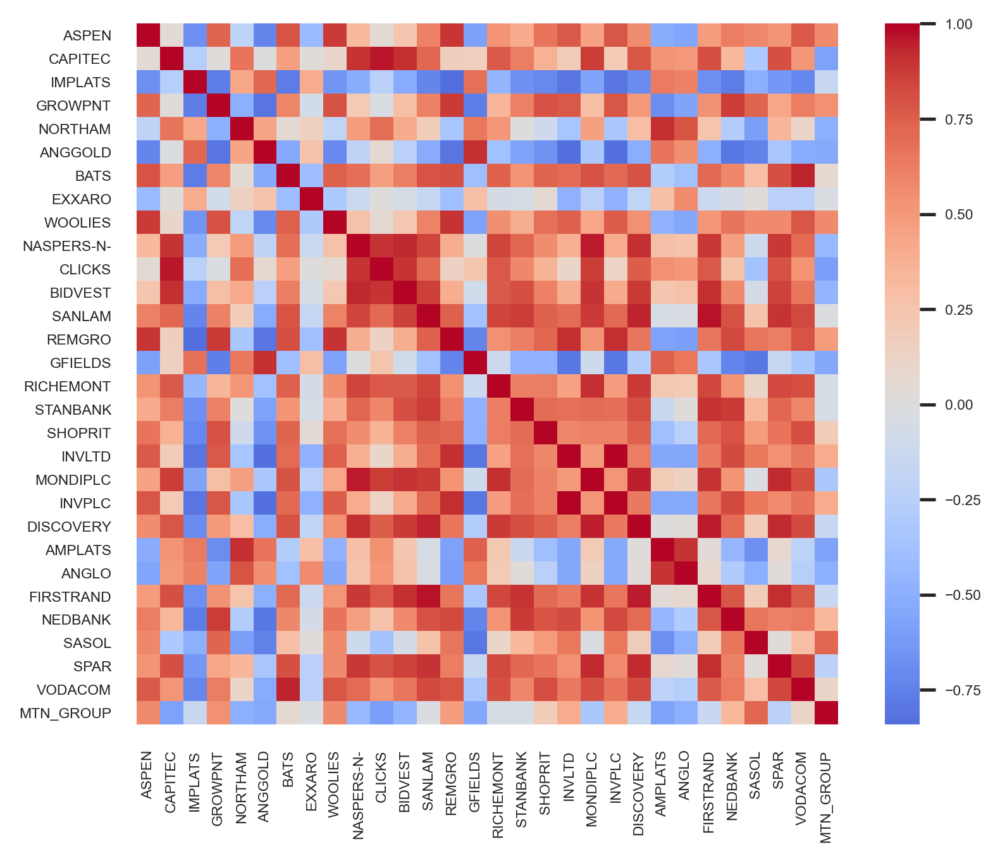
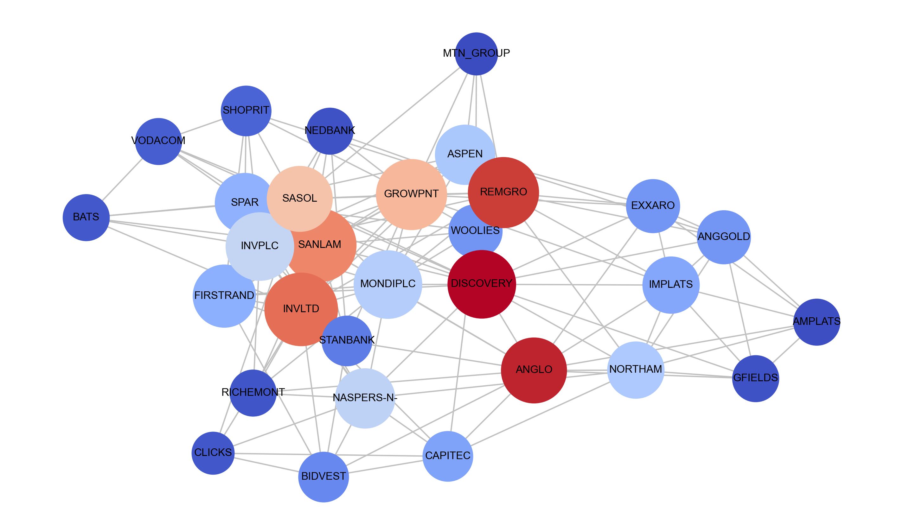
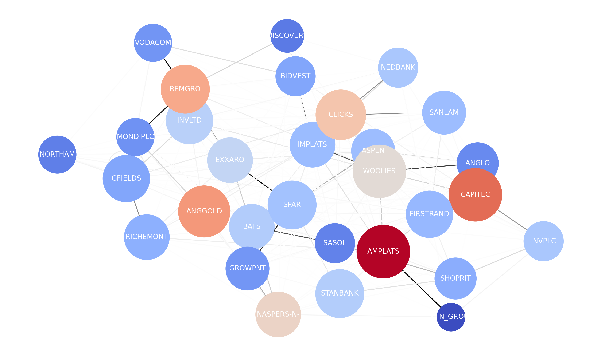

Graph Neural Networks
Overview
Graph neural networks are a class of deep neural network models that process graphically-encoded multivariate data. Spatial-temporal graph neural networks process data exhibiting both spatial and temporal dependencies.
A stock market is a financial market that facilitates the exchange of ownership shares of listed financial securities. Stock markets are dynamic systems that exhibit linear and non-linear dependencies. A correlation matrix provides a mechanism for encoding multivariate linear correlations in a graphical structure.
The literature has demonstrated ST-GNN applications to traffic network, energy and medical datasets, but there is a deficit of price prediction studies. Furthermore, existing research assumes prior knowledge of the graph structure and earlier techniques require predefined structure, an unsuitable prerequisite for stock market prediction with latent dependencies.
Previously introduced spatial-temporal GNNs are not suitable for modelling multivariate time series due to two distinct factors: unavailability of prior information and the sub-optimality of the predefined graph - Wu et al. (2020)
Research Objectives
- Evaluate the application of three ST-GNNs to Johannesburg Stock Exchange (JSE)-listed share price prediction
- Test the capability of a correlation matrix to capture market dependencies and encode structural information
Methodology
Models
We evaluated Graph WaveNet (GWN), MTGNN and Spectral-Temporal Graph Neural Network (StemGNN) for stock market price prediction.
Graph WaveNet
GWN is a hybrid architecture for spatial-temporal graph modelling. The architecture consists of temporal convolution (Gated TCN) and graph convolution (GCN) modules. The GCN module contains a self-adaptive adjacency matrix that requires no prior information and is learnt using stochastic gradient descent.
The TCN module consists of one-dimensional convolutions that capture long-range temporal sequences. The GCN module extracts node-level dependencies using neighbourhood feature aggregation. We evaluated a double transition matrix plus adaptive adjacency matrix using the correlation matrix initialisation against the adaptive-only adjacency matrix.
MTGNN
MTGNN is a hybrid architecture designed with an explicit focus on multivariate time series forecasting. A graph learning layer extracts an adaptive adjacency matrix that requires no prior information. The TCN module captures temporal dependencies. The GCN module extracts node-level dependencies using neighbourhood feature aggregation.
MTGNN is trained using a curriculum learning strategy that splits the input into subgroups. Curriculum learning locates optimal local minima by training the algorithm on a single-step forecasting task first and subsequently increasing the prediction horizon. We evaluated a predefined static graph structure against the adaptive-only adjacency matrix.
StemGNN
StemGNN is a hybrid architecture for multivariate time series forecasting that captures inter-series correlations and temporal dependencies in the spectral domain. StemGNN is trained on the spectral representation of the graph using graph signal processing techniques. The Spectral-GCN captures dependencies in the spectral domain.
A graph signal is transformed into the spectral domain by a Fourier transform ℱ and a convolution operator is applied to the spectral signal. A latent correlation layer automatically learns inter-series correlations to extract an adjacency matrix without prior information. For our evaluation, StemGNN was not initialised with the correlation matrix.
| Architecture | Type | Temporal Component | Spatial Component | Datasets (MAPE%) |
|---|---|---|---|---|
| Graph WaveNet | Spatial-Temporal | Gated Temporal Convolution | Graph Convolution | Traffic (8.23%) |
| MTGNN | Spatial-Temporal | Temporal Convolution | Graph Convolution |
Traffic (5.18%) Electricity Solar Forex |
| StemGNN | Spectral-Temporal | Spectral-Sequential Cell | Spectral Graph Convolution |
Traffic (6.46%) Electricity (14.77%) Solar (11.55%) ECG (10.58%) |
Experimental Design
Data
- FTSE/JSE Top 40 Index Daily Close Prices
- 18 May 2009 - 20 July 2021
- 3146 Samples × 30 Stocks
- 60:20:20 Train/Validate/Test Split
Baseline
- Long-term Short Memory (LSTM) Model
- Last-Value (Naive) Model
Setup
- Apple MacBook Pro Intel® Core™ i5-8257U CPU @ 1.4 GHz
- 50 Epochs
- Mean Squared Error Loss Function
- RMSProp Optimiser
-
Metrics
- Mean Absolute Percentage Error (MAPE)
- Mean Absolute Error (MAE)
- Root Mean Squared Error (RMSE)
Results
Selected results and key findings are included in this section. Refer to the paper for the complete set of results and in-depth discussion.
Single-Step Forecasting
| 30-Day Window | 60-Day Window | 120-Day Window | |||||||
|---|---|---|---|---|---|---|---|---|---|
| Model | MAPE(%) | MAE | RMSE | MAPE(%) | MAE | RMSE | MAPE(%) | MAE | RMSE |
| Last-Value | 198.33 | 13252.53 | 16380.79 | 201.12 | 13235.56 | 16371.01 | 218.19 | 13274.57 | 16458.70 |
| LSTM | 49.84 | 3588.49 | 4877.43 | 192.90 | 12505.11 | 15455.85 | 197.15 | 11847.00 | 14561.59 |
| GWN | 10.44 | 3072.72 | 8496.79 | 24.35 | 5432.03 | 15325.71 | 32.90 | 7603.66 | 20206.61 |
| MTGNN | 6.76 | 1478.92 | 3511.12 | 9.06 | 1953.99 | 4871.51 | 10.62 | 2472.13 | 6857.16 |
| StemGNN | 18.01 | 8415.90 | 21715.64 | 23.62 | 9329.78 | 21636.29 | 23.25 | 9249.32 | 21583.35 |
We tested the performance of the ST-GNNs and baseline LSTM and Naive models on a single-step forecasting task for 30-, 60- and 120-day window sizes. Regular trading days for the Johannesburg Stock Exchange are Monday through Friday, and thus the selected window sizes correspond to 6, 12 and 24 trading weeks.
The results show that MTGNN outperforms both GWN and StemGNN by a substantial margin for all tested input window sizes. The performance variation between MTGNN and GWN and StemGNN increases as the window size is increased, as MTGNN does not demonstrate similar levels of performance degradation. Further, the results demonstrate that predictive performance of the GNN and baseline models decreases as the window size is increased.
Multi-Step Forecasting
| 20-Day Window | 5-Day Horizon | 10-Day Horizon | 20-Day Horizon | ||||||
|---|---|---|---|---|---|---|---|---|---|
| Model | MAPE(%) | MAE | RMSE | MAPE(%) | MAE | RMSE | MAPE(%) | MAE | RMSE |
| LSTM | 46.85 | 3345.75 | 4635.75 | 54.97 | 3912.20 | 5408.92 | 68.54 | 4782.45 | 6596.19 |
| GWN | 17.87 | 2554.10 | 6430.45 | 17.27 | 2716.00 | 6819.69 | 12.17 | 3147.66 | 8852.29 |
| MTGNN | 216.97 | 29217.75 | 54875.26 | 258.05 | 31484.04 | 54808.86 | 232.43 | 32251.45 | 63249.00 |
| StemGNN | 24.96 | 10327.52 | 24464.46 | 26.64 | 10907.52 | 25375.75 | 30.92 | 11992.33 | 27384.19 |
We tested the performance of ST-GNNs and baseline LSTM on a multi-step forecasting task for 20-, 40- and 60-day window sizes and 5-, 10- and 20-day prediction horizons.
Comparing MAPE, GWN significantly outperforms MTGNN, StemGNN
and the LSTM for the tested hyperparameters. Whilst the LSTM obtains
consistently lower RMSE scores, this can be attributed to the
independently-generated model predictions, which potentially reduces
error propagation.
MTGNN is the unexpected laggard for the evaluated multi-step forecasting tasks, demonstrating inferior performance relative to the baseline. However, the LSTM is incapable of multi-node forecasting and is independantly trained.
The results show a general decline in predictive performance as the horizon length is increased. There is no clear relation between window size and prediction error.
Our results demonstrate that an ST-GNN can produce suitable accuracy on the price prediction problem. For both tasks, a ST-GNN achieves a considerable performance improvement over the baseline LSTM. This supports modelling both temporal and latent spatial dependencies in stock market data.
Correlation Matrix Multi-Step Forecasting
| 40-Day Window | 5-Day Horizon | 10-Day Horizon | |||||
|---|---|---|---|---|---|---|---|
| Model | Adjacency Matrix | MAPE(%) | MAE | RMSE | MAPE(%) | MAE | RMSE |
| GWN | Adaptive-only | 12.44 | 3960.92 | 11642.37 | 15.35 | 4370.69 | 12882.04 |
| GWN | Forward-backward-adaptive | 22.25 | 5150.09 | 14683.01 | 20.43 | 5089.13 | 14254.43 |
| MTGNN | Adaptive-only | 122.63 | 519905.99 | 42729.60 | 152.71 | 23566.66 | 49893.09 |
| MTGNN | Predefined | 118.53 | 20303.73 | 44546.03 | 192.05 | 26726.98 | 52491.44 |
 FTSE/JSE Top 40 Index Correlation Matrix We tested the performance of GWN and MTGNN on a multi-step forecasting task for 20- and 40- window sizes, 5- and 10-day horizons with the inclusion of the correlation matrix to initialise the GWN and MTGNN adjacency matrices.
The results demonstrate that the provision of structural information proxied by a correlation matrix does not improve predictive performance. For GWN, the forward-backward-adaptive adjacency matrix configuration marginally outperforms for a 20-day input window only.
The provision of prior information results in a minimal improvement in MTGNN's predictive performance for a 20-day window. However, performance similarly degrades as the window size is doubled.
Our results show that a correlation matrix is a sub-optimal mechanism encode prior structural information. The prior inclusion of multivariate correlations produced a negligible impact on predictive accuracy. We conclude that linear correlations do not capture complex latent dependencies in the stock market.
Multivariate Correlation Analysis
GWN extract a graph structure that is highly dissimilar to that
represented by the correlation matrix.
Comparing the adaptive
adjacency matrices, GWN extracts a sparse graphical structure, in
contrast to the dense graph learnt by MTGNN.
There are no
identifiable commonalities between the two matrices, nor is one
matrix a more fine-grained dependency representation.
 Simple Correlation Network GWN's share price forecasting performance suggests that the model can accurately extract spatial dependencies. Therefore, we can infer that fewer complex dependencies exist, given that the sparse graph is an approximate representation of market structure.
We constructed a simple and two-level hierarchical correlation network from the static correlation matrix. Our analysis identified that the network communities stabilises at two. This aligns with the results of bi-clustering performed on the correlation matrix, which finds two compact clusters of highly correlated stocks. Further analysis can produce structural information encodings that may capture non-linear dependencies more effectively.
Future Work

Graph WaveNet Adaptive Graph
This research has addressed gaps in the literature and produced
empirical results that assess the applicability of the selected
ST-GNNs to JSE-listed share price prediction and the suitability of
a correlation matrix proxy for the graph structure.
We produced a state-of-the-art representation of the dependencies in
the FTSE/JSE Top 40 Index through the GWN adaptive graph. We provide
a foundation for future investigation of spatial-temporal graph
neural networks and real-world applications of stock market
prediction. Future research can evaluate stock market data from
different exchanges and other ST-GNN techniques.